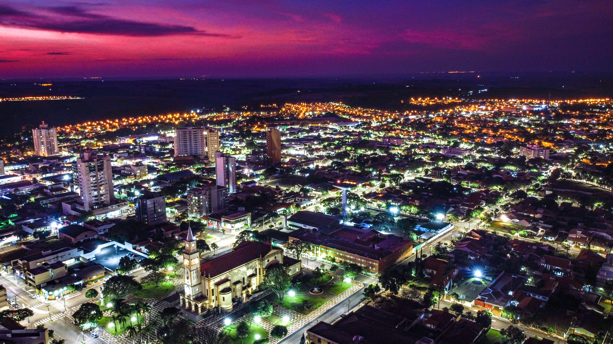

Nossa história começa em Rolândia, no Paraná. Começamos sendo apenas um bar ordinário em um bairro simples. Ao passar do tempo, o dono do bar decidiu expandir esse bar, e aos poucos o tranformou em um restaurante bastante conhecido na região.
Porém um dia, o dono teve uma ideia audaciosa. Ele quis criar robôs (chamados de "animatrônicos") para entreter seus clientes. Depois de um investimento pesado e um bom planejamento, ele finalmente alcançou sua tão desejada conquista. Mesmo depois de tudo isso, o dono decidiu manter o nome original e o tema do seu bar como uma homenagem à seu primeiro bar. Depois disso é história, o bar ganhou imensa fama ao redor do país.